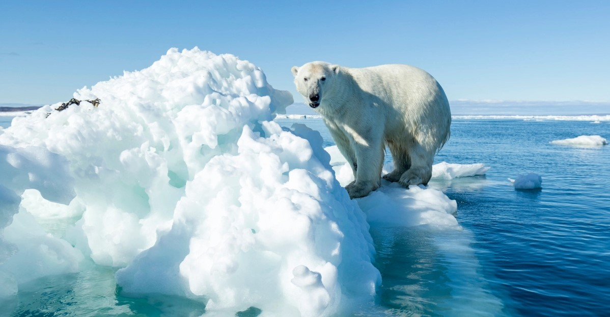

El mundo del oso polar
Descubre la fantástica vida del rey del Ártico
El hábitat del oso polar: una mirada al mundo ártico de los osos blancos
El oso polar es una especie icónica que habita en el Círculo Polar Ártico. Esta región incluye países como Canadá, Rusia, Noruega, Dinamarca y Estados Unidos (Alaska), y se caracteriza por su clima frío, oscuro y extremo. Los osos polares han evolucionado para sobrevivir en este hábitat inhóspito y cuentan con características y adaptaciones únicas.
Uno de los rasgos más distintivos del hábitat del oso polar es el hielo marino, que se extiende a lo largo del océano Ártico. Los osos polares pasan gran parte del año en el hielo, que les proporciona una plataforma para cazar y viajar. El hielo marino también es importante para la reproducción de los osos polares, ya que las hembras utilizan cuevas de nieve y hielo para dar a luz a sus cachorros.
En resumen, el hábitat del oso polar es una región ártica fría y oscura que incluye el hielo marino y otras características únicas. Los osos polares han evolucionado para sobrevivir en este ambiente extremo y dependen del hielo marino y de otras especies animales para sobrevivir. Sin embargo, el cambio climático representa una amenaza para su supervivencia, ya que el hielo marino se está derritiendo a una velocidad alarmante.
